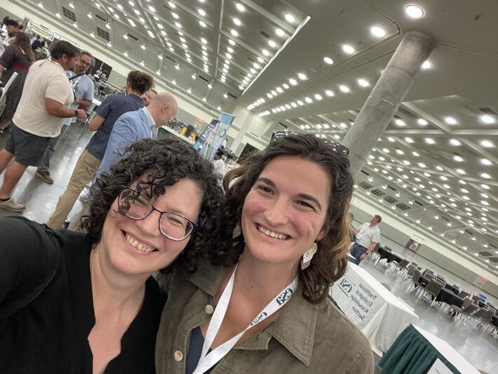

Professor Tanya Berger-Wolf, Imageomics Institute director, made notable appearances at the 2025 Ecological Society of America (ESA) annual meeting, serving as a panelist and speaker in sessions focused on advancing equitable and open ecological science.
Berger‑Wolf contributed to two pivotal panels embedded within the “Ecology Is Everywhere, but It Needs to CARE and Be FAIR” theme. She joined fellow ecologists—including Illeana Fenwick, Natasha Gownaris, Diogo Provete, Ceres Barros, Marie‑Christin Wimmler, Uta Berger, Noam Ross, and Collin Schwantes—to discuss integrating CARE (Collective benefit; Authority to control; Responsibility; Ethics) and FAIR (Findable, Accessible, Interoperable, Reusable) principles into ecological research. She also spoke in "FAIR AI‑Ready Science," emphasizing the importance of ethical AI and data-sharing frameworks in ecological investigations.
ESA, founded in 1915, is a leading nonpartisan, nonprofit organization devoted to advancing ecological science through improved communication, public outreach, education, and influence on environmental policy—aligning perfectly with the themes of Berger‑Wolf’s panels. Its mission is “to advance the science and practice of ecology and support ecologists throughout their careers,” supported by a vision of a future in which “people embrace science to understand and foster a thriving planet”
Berger-Wolf heads the Imageomics Institute, leveraging AI and image analysis to decode biological traits and deepen our understanding of biodiversity, and she directs the ABC Global Center (AI for Biodiversity Change), which applies AI to monitor environmental change on global ecosystems. Her work exemplifies FAIR, CARE, and AI integration in service of nature and equity.
The ESA annual meeting is more than a conference—it’s a vital forum where ecologists convene to shape the future of responsible, inclusive ecological research and its application to urgent environmental challenges.